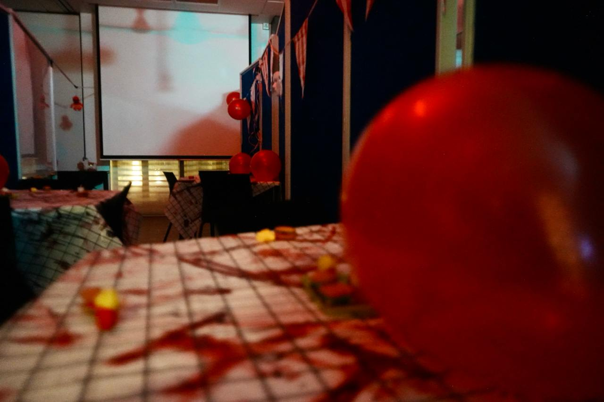
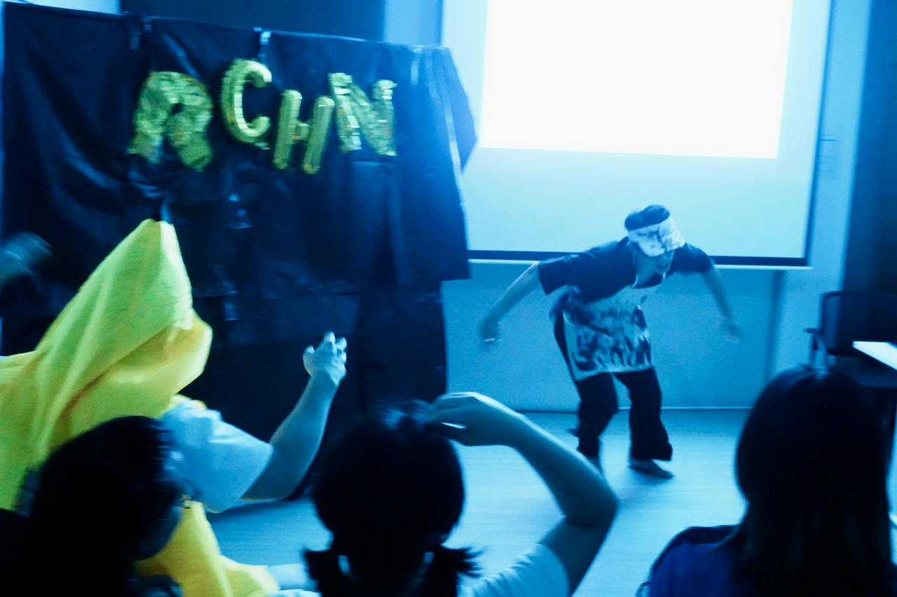
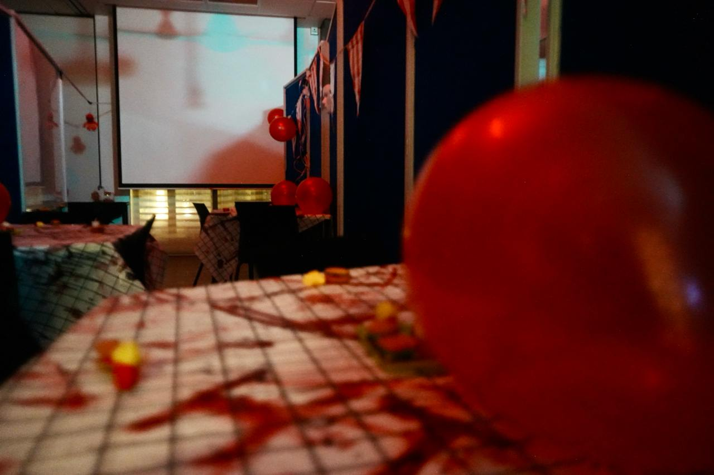
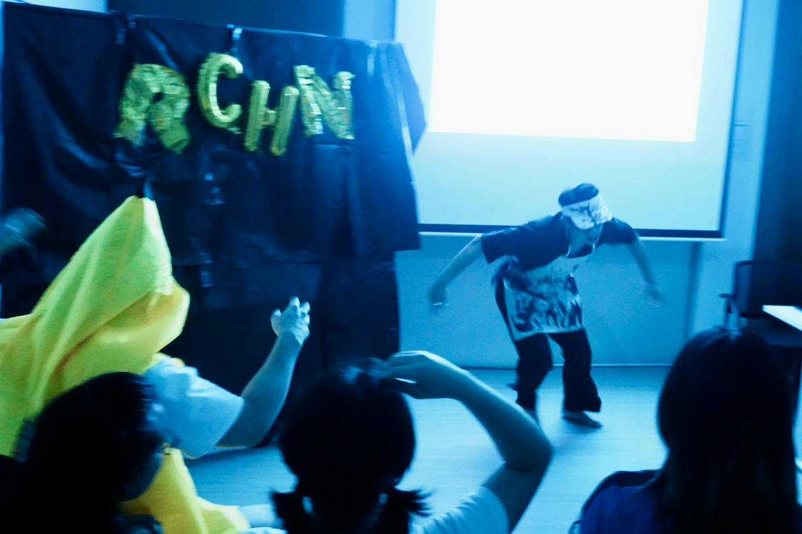

Overseas Internship Experience
Gapai
July 2025 - Dec 2025
Jakarta, Indonesia
Interned as a Software Engineering Intern (Front-end) in Jakarta as part of the NUS Overseas Colleges (NOC) Program

Interned as a Software Engineering Intern (Front-end) in Jakarta as part of the NUS Overseas Colleges (NOC) Program
During my six-month overseas internship with Gapai under the NUS Overseas Colleges Indonesia programme, I had the opportunity to work as a front-end software engineering intern in Jakarta. Gapai is a start-up that connects locals with overseas job opportunities, and as part of the small, dynamic team of about 25 members, I was able to contribute meaningfully while also gaining a close understanding of how each department in a start-up functions.
In my role, I worked on both independent projects and smaller UI enhancements following internal audits. One of my most notable projects was developing a testing environment for Gapai’s new AI Interviewer product. This environment enabled the entire company to test the product simultaneously, allowing us to evaluate concurrency and performance under load. It was rewarding to see colleagues across the company use a system I built, and to know that my work directly supported the product’s development.
Another key contribution I made was implementing a tracking system for the AI Interviewer. This system monitored and logged issues such as connection drops, focus loss when users switched applications, and agent buffering errors. By capturing this data, the team was able to better understand user behaviour and identify areas for product improvement.
Beyond the technical experience, I truly valued working in a start-up environment where transparency and collaboration were integral. Monthly company-wide meetings allowed every department to share updates, giving me a broader perspective of the business as a whole, which is something I might not have experienced in a larger organisation.
Living in Jakarta also enriched my experience immensely. Alongside my internship, I took classes at Universitas Indonesia on business feasibility studies, where I connected with peers who had innovative ideas for the rapidly developing Indonesian market. I also explored the city’s vibrant start-up scene through events and competitions, and immersed myself in the culture by learning conversational Bahasa Indonesia, which was widely used both in the workplace and in daily life.
This internship was truly a unique experience that allowed me to develop both technical and soft skills. It strengthened my ability to work in a fast-paced, resource-constrained environment, improved my adaptability, and gave me invaluable cross-cultural exposure. I believe the skills and perspectives I gained during this time will continue to shape my growth and contribute positively to my future career.
Served as a Project Director for various events at Residential College 4 (RC4), overseeing planning, coordination, and execution to ensure successful outcomes
During my time at RC4, I took on multiple leadership roles and directed three major college-wide events: Arts Night Runway, Informal Dinner, and Residential Colleges Horror Night. Each one pushed me in different ways, but they were all really rewarding experiences.
Arts Night Runway
Arts Night is our annual showcase for music, dance, and theatre, and as Head of the Fashion and Sewing Club, I got to create and direct a fashion runway segment. It was hectic pulling everything together on a tight timeline, from coordinating models, sewers, designers, and the main event committee, to finishing my own design, but seeing it all come together on stage made the stress worth it.
Informal Dinner
This is a biannual themed dinner for residents, and I directed a Back to School edition for around 350 people. I worked with many different groups: my own events committee, dining hall staff, performers, sound engineers, and college staff. Even when we hit a few technical hiccups, the event ran smoothly and was praised by residents for its nostalgic theme, performances, and immersive atmosphere.

 



Residential Colleges Horror Night
This was the biggest event that I had ever directed. As a collaboration between all 5 residential colleges with about 1,000 attendees, it was a daunting event to take up. I oversaw RC4’s haunted house while also coordinating with the other colleges to make sure everything ran safely and on theme. I also introduced two new systems that helped streamline operations and improve safety:
1. A Telegram queue system, so people didn’t have to stand in long physical lines without knowing if they’d even get to go into the haunted houses.
2. A two-part haunted house design for our RC4 house, which made the experience faster without losing the scares. More people could go through, more scare actors could be involved, and feedback was much better than in past years.
Overall, these events taught me a lot about leading teams, handling logistics, and coming up with creative solutions under pressure. It was stressful at times, but the energy on the event day and the positive feedback from residents and committee members made it all worth it.